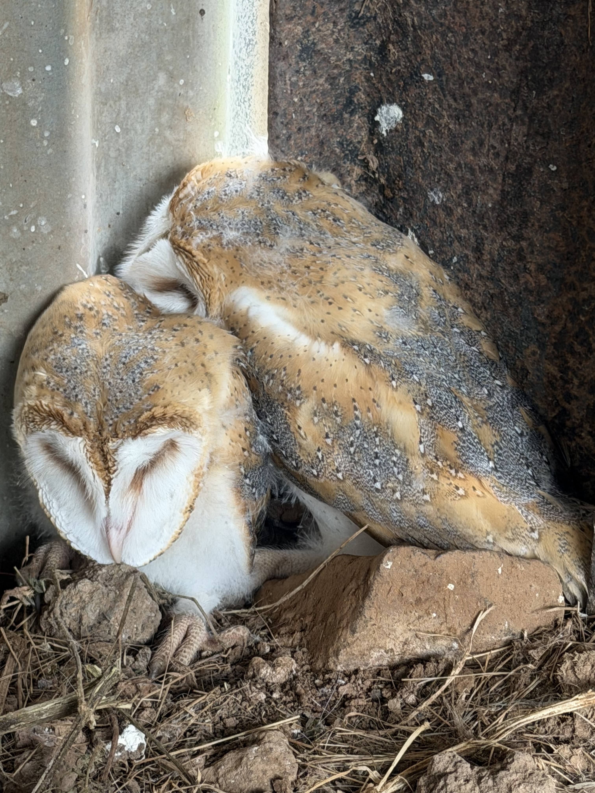
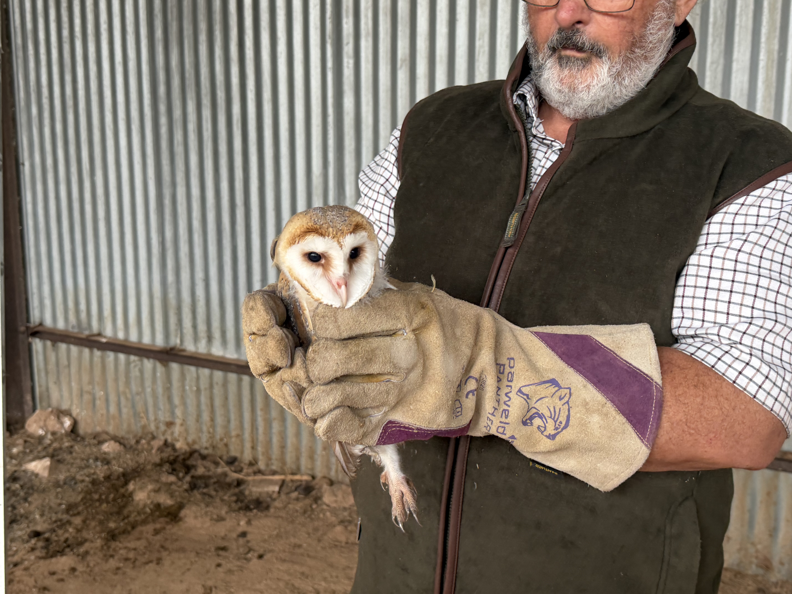

This week the barn owl chicks have been a significant part of what's going on at Reaside.
It started when we found two partially fledged chicks in the horse shelter, huddled together in a corner. They were fine, if a little bedraggled, so after checking with the Barn Owl Trust we put them back in a nesting box we knew was up in the roof. Barn owl chicks can't climb, and if left out on the ground they'll soon die from starvation and cold.
They were amazingly light in the hand, but very vocal, hissing at us the whole time.

The barn owl chicks, in various stages of development from grey fluff to almost full adult plumage.
The box had been up there for many years, and we hadn't seen much sign that it was in use. But once we were up at the box returning the first two, we found four chicks in total, in various stages of development — some still completely covered in grey fluff, others with almost full adult plumage. There was a fresh vole sitting on the edge of the box too, so we knew the adults were about, keeping the chicks fed.
That also explained why the chicks kept ending up on the ground. The nesting box, made from an old tea crate, was three-quarters full of debris. Apparently these boxes are meant to be cleared out once a year so it doesn't build up like this, which is something we'll be doing from now on.

Finding chicks on the ground continued for a few days, so each morning we'd climb up and put them back in the nest. We couldn't clear the box out properly while there were still chicks inside, so instead we built a wide ledge outside the entrance, so that when they came out to feed there'd be somewhere safe to stand rather than the drop straight to the floor below.
We also put up a camera facing the box, partly to check the parents were still coming in to feed them, and partly because we were curious to see it for ourselves.
The new ledge did a great job. Since it went up, we haven't found a single chick on the ground. Instead, the camera showed an adult owl flying in with food and all the chicks lining up on the ledge ready to receive it.
Six barn owl chicks lined up on the new ledge, waiting their turn to be fed.
In total we counted six chicks, and they turned out to be remarkably orderly about it. The one at the end of the line would take a vole from the adult, then shuffle back into the box so the next one along could move up and be fed. They were just as vocal as the two we'd handled, but this time it wasn't hissing — it was screeching, calling the adults in with food.